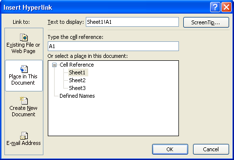

Free
computer Tutorials
|
Free
computer Tutorials
|
|
 HOME HOME
|
|
||||
Microsoft Excel 2007 to 2010How to Insert Hyperlinks in ExcelYou can place Hyperlinks in the cells on your spreadsheet. To quickly go to a different worksheet or workbook, you would simply click the link. We'll see how to do that now.
When you click the Hyperlink item, you'll see the following dialogue box appear: We're going to create a link to another worksheet in this same spreadsheet. So, under Link to on the left, click on "Place in This Document".
When you click Place in This Document, the dialogue box changes to this:  We'll try linking to Sheet3 on our spreadsheet. When the link is clicked on Sheet1, we want to jump to a specific cell on Sheet3.
Your dialogue box will then look something like this one: Click OK when you're done, and you'll see cell A1 on your spreadsheet change: Hold your mouse over the link and you should see your Screen Tip: Try to click on your link, and you might find that nothing happens! To use the hyperlink, you have to click the link and hold your mouse down for a second or so. Let go of the left mouse button and you should jump to Sheet 3. If you want to open up an existing spreadsheet, instead of jumping to a location in the current one, click the Hyperlink item on the Links panel to bring up the dialogue box again.
When you click your new link, the spreadsheet file you selected will open.
In the next part, we'll take a look at Object Linking and Embedding
in Excel. |
|||||
|